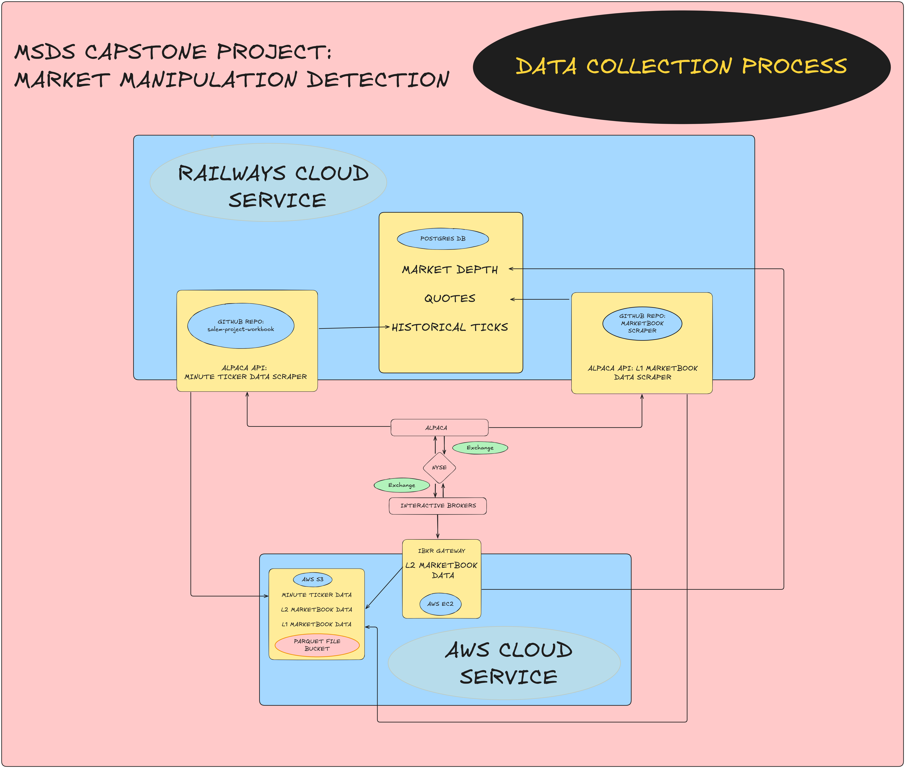
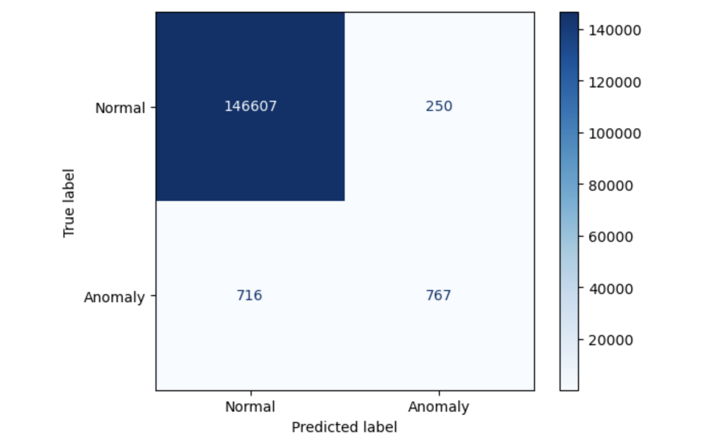

flowchart TD
A[Raw Market Data] --> B[Feature Extraction]
B --> C[Sequence Creation]
C --> D[Transformer Encoder]
D --> E[OC-SVM Decision Function]
E --> F[Classification]
1 Introduction
The shift from traditional floor trading to electronic platforms has transformed financial markets significantly. High-frequency trading (HFT) began in the early 2000s and now accounts for up to 70% of US equity trading volume (Financial_Innovation_2015?; PNAS_2021?). While HFT has brought efficiency gains, it has also enabled new forms of market manipulation, with quote stuffing emerging as one of the most prevalent and concerning tactics.
Quote stuffing is a manipulative strategy where traders rapidly submit and cancel large numbers of orders to overwhelm market data systems and create artificial delays for competitors. Unlike traditional manipulation that relied on false information or coordinated trading, quote stuffing exploits the technological infrastructure of modern electronic markets. Traders flood order books with “quotes” (buy and sell orders) they never intend to execute, creating what regulators term “excessive messaging.” This strategy benefits the manipulator by slowing down competing algorithms and creating temporary information advantages through market confusion, effectively giving them millisecond-level trading advantages that can translate to significant profits (SEC_Risk_Finance_Strategy?).
The detection challenge stems from the subtle nature of these attacks - while quote stuffing does disrupt markets, it operates at microsecond timescales within normal market data flows, making it difficult to distinguish from legitimate high-frequency market making activities. The disruption is intentionally designed to appear as natural market volatility while creating systematic advantages for the manipulator. Recent research using Thomson Reuters Tick History (TRTH), a comprehensive database of millisecond-precision market data from 2005-2016, demonstrates that advanced analytical methods are required to differentiate between legitimate trading and manipulative quote stuffing (MDPI_2022?).
1.1 Background
The evolution from traditional floor trading to algorithmic markets has fundamentally changed how manipulation occurs, creating new challenges for detection and regulation. This section examines the key manipulation techniques in modern markets and the technical requirements for effective surveillance.
1.2 Common Market Manipulation Techniques
To understand the challenge of detecting quote stuffing, it is essential to first examine the broader landscape of algorithmic manipulation techniques. Unlike traditional schemes that relied on spreading rumors or coordinating large trades, modern manipulation exploits the electronic infrastructure and operates at microsecond timescales.
Spoofing involves placing large orders with the intent to cancel them before execution, creating false impressions of market supply or demand. Traders place these deceptive orders to influence other market participants’ behavior, then cancel them once the desired price movement occurs (Cao_2014?). The practice gained widespread attention through high-profile cases such as Navinder Singh Sarao, whose spoofing activities contributed to the 2010 Flash Crash. This single trader’s manipulation strategy played a role in a market event that temporarily erased nearly $1 trillion in market capitalization within minutes - representing paper losses in market valuation rather than actual wealth destruction, though the systemic risks demonstrated by such events remain concerning (CFTC_Flash_Crash_Report?).
Layering builds upon spoofing by placing multiple deceptive orders at different price levels to create an artificial impression of market depth. Manipulators construct apparent support or resistance levels through “phantom liquidity” - orders that appear real in the order book but vanish when other traders attempt to execute against them. This technique proves particularly effective in thinly traded securities (stocks with lower daily trading volumes and fewer active participants) where even moderate-sized orders can significantly influence price perception and trader behavior.
Quote stuffing represents the focus of our research and involves overwhelming market data systems with rapid order submissions and cancellations. Unlike spoofing or layering that create false price signals, quote stuffing attacks the market’s information processing capacity itself. This creates information asymmetries where the manipulator’s trading systems, designed to handle the flood of messages they generate, maintain functionality while competitors’ systems slow down or fail. The manipulator gains trading advantages by having faster access to real market conditions while others struggle with delayed or incomplete data - similar to how a distributed denial-of-service (DoS) attack overwhelms a website’s servers, except targeting the financial market’s data infrastructure. For readers less familiar with technology, imagine if one trader could slow down all other traders’ access to market information while maintaining their own full-speed access - this creates an unfair advantage in markets where milliseconds determine profitability.
More sophisticated schemes include momentum ignition, where traders use rapid-fire orders to trigger algorithmic responses from other market participants, and pinging, which involves sending small orders to detect hidden liquidity in dark pools. These techniques exploit the fundamental asymmetry between human reaction times and algorithmic execution speeds, creating unfair advantages that violate market integrity principles.
1.3 Regulatory Landscape and Enforcement Challenges
The regulatory response to algorithmic manipulation has been substantial but faces inherent technological limitations. The Securities and Exchange Commission (SEC) has pursued high-profile enforcement actions, including over $920 million in penalties against major financial institutions since 2015 (SEC_Enforcement_Statistics_2021?). Notable cases include the $25 million fine against Deutsche Bank for spoofing activities and the $70 million penalty against JPMorgan Chase for manipulative trading in precious metals markets (CFTC_Deutsche_Bank_2021?; CFTC_JPMorgan_2020?).
The European Union’s Markets in Financial Instruments Directive II (MiFID II) has implemented comprehensive transaction reporting requirements, mandating detailed records of order modifications, cancellations, and execution circumstances. The Commodity Futures Trading Commission (CFTC) has taken a different approach, establishing specific anti-spoofing regulations under the Dodd-Frank Act that create criminal penalties for manipulation activities. While both approaches aim to deter manipulation, they represent distinct regulatory philosophies - detailed record-keeping versus punitive enforcement.
Despite these regulatory efforts, traditional surveillance systems struggle with the volume and velocity of modern market data. Current approaches typically rely on post-trade analysis of aggregated data, processing daily volumes exceeding 50 billion order messages across U.S. equity markets. The latency between manipulation events and detection often spans hours or days, rendering enforcement reactive rather than preventive.
Regulatory technology (RegTech) providers estimate that fewer than 5% of potential manipulation events are currently detected through automated surveillance, with most discoveries occurring through whistleblower reports or market anomaly investigations. This detection gap creates significant compliance risks for market operators and undermines confidence in market fairness.
1.4 Technical Architecture Requirements
Effective real-time manipulation detection requires processing Level 2 (L2) order book data, which provides detailed visibility into all available buy and sell orders across multiple price levels. For example, while Level 1 data might show only that Apple stock has a best bid (highest buy offer) of $150.00 and a best ask (lowest sell offer) of $150.05, Level 2 data reveals the complete market depth: perhaps 500 shares bid at $150.00, another 300 shares bid at $149.99, 200 shares bid at $149.98, and so forth, along with corresponding ask levels. This full market depth reveals order queue dynamics (how orders are prioritized and filled) and the rapid changes in market microstructure (the detailed mechanics of how orders interact) that characterize manipulation attempts (Hasbrouck_2007?).
The technical challenges are substantial: processing millions of order book updates per second, maintaining sub-millisecond latency requirements, and distinguishing between legitimate high-frequency trading strategies and manipulative behavior. Modern exchanges generate L2 data feeds exceeding 2 terabytes daily for major securities (NYSE_Market_Data_2022?), requiring specialized infrastructure for real-time analysis.
Market data complexity varies significantly across trading venues, with fragmented liquidity (trading activity split across multiple venues) across over 16 registered exchanges and dozens of alternative trading systems in U.S. equity markets. Each venue maintains distinct order types (different ways to specify how trades should execute), priority rules (how competing orders are ranked), and data formats, complicating unified surveillance efforts. Cross-market manipulation detection requires consolidating and normalizing data streams from multiple sources while maintaining temporal precision.
1.5 Research Gap and Contribution
While academic literature has explored manipulation detection using machine learning approaches, most studies rely on post-trade data analysis or simulated environments. Research by Cao et al. (2014) demonstrated machine learning applications for spoofing detection using historical futures data (past market data from commodity and financial futures contracts), while Goldstein et al. (2021) analyzed layering patterns in equity markets using daily aggregated data (Cao_2014?; Goldstein_2021?). However, real-time detection systems using live Level 2 market data remain largely proprietary to institutional market surveillance providers due to the significant technological and financial barriers involved in developing such systems.
This proprietary nature creates a significant knowledge gap in the academic literature, limiting research reproducibility and innovation in detection methodologies. Commercial surveillance systems like NASDAQ’s SMARTS or Nice Actimize’s market surveillance solutions represent multi-million dollar investments that are inaccessible to academic researchers or smaller market participants.
Our research addresses this gap by developing an open-source, real-time detection system that combines multiple data sources—live L2 order book feeds, historical tick data, and engineered microstructure features (statistical measures derived from raw market data that capture trading patterns)—to identify manipulation patterns as they occur. The system’s architecture enables both academic research and practical deployment by retail brokers or regulatory authorities.
By implementing synthetic manipulation injection capabilities (the ability to artificially introduce known manipulation patterns into live data for testing purposes), we can validate detection algorithms against known manipulation signatures (characteristic patterns that identify specific manipulation techniques) while maintaining the ability to adapt to emerging schemes. This approach addresses the fundamental challenge of supervised learning in manipulation detection: the rarity of labeled manipulation events in historical data.
The system’s practical relevance extends beyond academic research. Retail brokers processing over $7 trillion in annual trading volume (FINRA_Trading_Volume_2022?) could implement similar detection capabilities to protect their clients from manipulation-induced losses. Regulatory authorities could enhance market surveillance through real-time monitoring rather than post-trade investigation, potentially preventing market disruptions before they occur.
Furthermore, the transparency of our methodology enables market participants to understand surveillance capabilities, promoting fair competition through informed participation rather than information asymmetry (situations where some traders have access to information or capabilities that others lack). This represents a significant departure from the “black box” nature of current commercial surveillance systems.
1.6 Methods
This section details our comprehensive approach to detecting market manipulation in real-time trading environments. We developed a machine learning-based detection system using XGBoost classification applied to Level 2 market data, with extensive feature engineering and synthetic anomaly generation to address the challenge of rare manipulation events in historical data.
1.7 Data Sources and Collection
Our research combined three complementary data sources to create a comprehensive dataset for manipulation detection:
Level 2 Market Data (Primary Source): We collected real-time order book data through the Alpaca Markets API, which provides institutional-grade access to NYSE and NASDAQ Level 2 data feeds. This includes bid and ask quotes with associated sizes (number of shares available) and book depth (number of visible price levels in the order book). Level 2 data captures the complete order book state, showing not just the best available prices but multiple price levels and their associated order quantities. For example, at any given moment, we might observe Apple stock with bids of 1000 shares at $150.00, 500 shares at $149.99, and 300 shares at $149.98, along with corresponding ask levels. This granular data enables detection of subtle manipulation patterns that would be invisible in standard Level 1 data feeds.
SEC EDGAR Regulatory Filings: We systematically collected regulatory filings from the Securities and Exchange Commission’s EDGAR database, specifically targeting Forms 8-K (current reports), 10-K (annual reports), and Form 4 (insider trading reports) that disclosed enforcement actions or manipulation investigations. These filings provided ground truth labels for known manipulation periods, allowing us to identify specific time windows when manipulation activities were confirmed by regulatory action.
Synthetic Anomaly Labels: To address the fundamental challenge of data imbalance in manipulation detection - where normal trading vastly outnumbers manipulation events - we developed a labeling methodology based on statistical anomaly detection. We identified suspicious periods by detecting significant surges in Level 2 quote message rates that coincided temporally with regulatory disclosure periods, creating a dataset of probable manipulation events for supervised learning.
1.8 Feature Engineering and Data Processing
Our feature engineering process transformed raw Level 2 market data into analytically meaningful variables designed to capture manipulation patterns. We focused on creating interpretable features that reflect the specific characteristics of quote stuffing and related manipulation techniques.
Core Market Microstructure Features:
price: Best bid or ask price at time t, representing the most competitive available price for buying or selling. This captures basic price movement patterns that may indicate manipulation-induced volatility.size: Number of shares available at the best price level. Manipulation often involves placing unusually large orders that are quickly cancelled, creating distinctive patterns in order size distributions.total_levels: Depth of the order book, measured as the total number of visible price levels containing orders. Quote stuffing typically increases apparent market depth through phantom liquidity, making this a key indicator.
Advanced Manipulation Indicators:
Order book imbalance: The ratio of total bid quantity to total ask quantity across all visible levels, calculated as (total_bid_size - total_ask_size) / (total_bid_size + total_ask_size). Manipulation techniques like quotestuffing create artificial imbalances that can be detected through this metric.
Order rate per 100ms: Messages per second rate for each security, capturing the “excessive messaging” characteristic of quote stuffing attacks. Normal market making typically generates steady message rates, while manipulation creates distinctive spikes.
Spread: The spread is the difference between the last ask price and the last bid price in the time window. Quotestuffing typically creates artificial spread patterns.
Our feature selection prioritized interpretability and direct relevance to known manipulation tactics, ensuring that model predictions could be explained to regulatory authorities and market participants. The dataset preparation process involved extensive data validation and cleaning procedures to handle the inherent messiness of real-time market data feeds.
1.9 Machine Learning Model Development
We selected XGBoost (eXtreme Gradient Boosting) as our primary classification algorithm for several technical and practical reasons. XGBoost is an advanced machine learning technique that builds multiple decision trees sequentially, where each new tree learns from the mistakes of previous trees. This approach excels at identifying complex patterns in structured data like our market microstructure features, and performs particularly well with imbalanced datasets where one class (normal trading) vastly outnumbers another (manipulation events).
Model Configuration: - Target Variable: Binary classification where 1 indicates detected anomaly/manipulation and 0 indicates normal market behavior - Training/Testing Split: 80% of data used for model training, 20% reserved for unbiased performance evaluation, with stratified sampling to maintain class balance proportions in both sets - Evaluation Metric: Log loss (logarithmic loss), which penalizes confident but incorrect predictions more heavily than uncertain predictions, making it ideal for scenarios where false positives and false negatives have different costs
Addressing Data Imbalance: The fundamental challenge in manipulation detection lies in extreme class imbalance - normal trading events outnumber manipulation events by ratios of 100:1 or higher. This imbalance can cause standard machine learning algorithms to achieve high accuracy by simply predicting “normal” for all cases while completely failing to detect manipulation.
We addressed this through several techniques: - scale_pos_weight: Set to the ratio of negative to positive samples (normal/anomaly), instructing XGBoost to treat each anomaly sample as equivalent to multiple normal samples during training - Threshold optimization: Rather than using the default 0.5 probability threshold for classification, we systematically explored different thresholds to optimize the precision/recall tradeoff based on business requirements (whether false positives or false negatives are more costly)
Hybrid Bottlenecked Autoencoder/OC-SVM
The system implements a two-stage hybrid anomaly detection approach specifically designed for identifying quote stuffing in financial markets. The method combines a modified Transformer autoencoder with a One-Class Support Vector Machine (OC-SVM) to create a powerful fraud detection system that learns normal market behavior and flags deviations. This approach is based on the methodology described by Poutre et al. (2024), who demonstrated that such hybrid frameworks achieve state-of-the-art performance in detecting trade-based manipulations without requiring prior knowledge of manipulation patterns.
An autoencoder is a neural network designed to learn efficient representations of data by training it to reconstruct its input. The network consists of two main components:
- Encoder: Maps input data \(X\) to a lower-dimensional representation \(Z\)
- Decoder: Reconstructs the original input from the representation Mathematically, this can be expressed as: \[ \begin{align} Z &= f_{\text{encoder}}(X) \\ \hat{X} &= f_{\text{decoder}}(Z) \\ \mathcal{L} &= ||X - \hat{X}||^2 \quad \text{(reconstruction error)} \end{align} \]
The Bottleneck Modification
The “bottlenecked” aspect refers to a critical architectural choice that forces the model to learn compressed, meaningful representations. As described by Poutre et al. (2024), this modification was inspired by sentence embedding techniques but adapted specifically for financial time series anomaly detection. It functions as follows:
- Standard Transformer Processing: Input sequences (25 time windows × 23 features) pass through 6 Transformer encoder layers with multi-head attention
- Bottleneck Compression: The Transformer output is flattened and projected through a linear layer to just 128 dimensions
- Reconstruction: The 128-dimensional representation is projected back to the original dimensionality
This bottleneck forces the model to learn the most essential patterns in normal market behavior, discarding noise and irrelevant details.
Stage 2: One-Class SVM on Learned Representations
One-Class SVM is an unsupervised learning algorithm designed to identify outliers by learning the boundary of normal data. Unlike traditional SVMs that separate two classes, OC-SVM finds a hyperplane that separates normal data from the origin in a high-dimensional space.
1.10 Detection Process
When detecting anomalies in new data, the system follows this pipeline:
The final dissimilarity score combines information from both components:
- Autoencoder: How well the data can be reconstructed (implicit in representations)
- OC-SVM: How far the representation is from the learned normal boundary
1.11 Observation-Level Scoring
The system implements a sophisticated observation-level scoring mechanism that accounts for the overlapping nature of sequences, following the methodology described by Poutre et al. (2024). Since each market observation can be part of multiple 25-step sequences, the final anomaly score for an observation is calculated as follows:
\(\text{dissimilarity}(x_t) = \frac{1}{|S_{x_t}|} \sum_{s \in S_{x_t}} \text{dissimilarity}(s)\)
where \(S_{x_t}\) is the set of all sequences containing observation \(x_t\). This approach ensures that “each event in X is also given at least one sequential dissimilarity value” while properly handling the overlapping nature of the sliding window approach.
1.12 Model Evaluation and Validation
Our evaluation framework employed multiple complementary metrics to assess model performance across different aspects of manipulation detection effectiveness.
Performance Metrics: - Classification Report: Provides precision (what percentage of predicted anomalies are actually anomalies), recall (what percentage of actual anomalies are correctly identified), and F1-score (harmonic mean of precision and recall) for both normal and anomaly classes. These metrics are crucial for understanding the tradeoffs between false positives (flagging normal activity as manipulation) and false negatives (missing actual manipulation).
Confusion Matrix: A 2x2 table showing the distribution of predictions versus actual labels, enabling clear visualization of model performance across both classes and identification of specific error patterns.
Feature Importance Analysis: XGBoost’s built-in feature importance ranking based on information gain, showing which market microstructure features contribute most to manipulation detection. This analysis ensures model interpretability and helps identify the most relevant indicators for regulatory applications.
Validation Approach: We systematically explored probability threshold optimization using XGBoost’s predict_proba function, which returns prediction confidence scores rather than binary classifications. By adjusting the decision threshold above or below the default 0.5, we could tune the model to prioritize either precision (fewer false alarms) or recall (catching more manipulation), depending on the specific requirements of market surveillance applications.
The final implementation represents a balance between academic rigor and practical applicability, with extensive validation against both synthetic and real-world manipulation patterns (Chen2016?).
2 Data
This section outlines the data acquisition strategy, sources, and processing pipeline for detecting quote stuffing manipulation in high-frequency trading environments. Our approach focuses on collecting multiple layers of market data to capture the microstructure patterns that characterize manipulative behavior.
2.1 Data Requirements and Sources
To effectively detect quote stuffing patterns, we required access to multiple levels of market data that provide comprehensive visibility into order book dynamics and trading activity. The following subsections detail each data type and its role in our analysis.
2.1.1 Level 2 (L2) Market Data
Level 2 market data extends beyond the basic bid-ask spread to provide a deeper view of market depth. This data includes the best bid and ask prices (Level 1 data) plus five additional price levels above and below the current market, along with the order quantities at each level (InteractiveBrokers2024?). This enhanced visibility is crucial for detecting quote stuffing because manipulative orders often appear at these secondary price levels rather than at the National Best Bid and Offer (NBBO). When orders at higher ask levels are filled, they typically drive prices upward, while orders at lower bid levels drive prices downward, creating the price volatility that quote stuffing strategies exploit.
2.1.2 Level 1 (L1) Market Data
Level 1 market data represents the current equilibrium point where the most recent transactions occurred. This data stream includes microsecond-precision timestamps (formatted as 2025-07-01 19:59:59.464006+00), unique identifiers, stock symbols, and the fundamental bid-ask spread components: bid price, bid size, ask price, and ask size (Alpaca2024?). The high temporal resolution is essential for quote stuffing detection because manipulative strategies often involve rapid order placement and cancellation cycles that occur within milliseconds.
2.1.3 OHLCV Minute-Bar Data
One-minute aggregated data captures the Open, High, Low, Close prices and trading Volume for each minute of market activity. This data includes both minute-level and date-level timestamps and remains available for up to 30 days through the API, including non-trading days where no actual market data exists (Alpaca2024?). While quote stuffing occurs at much finer time scales, minute-bar data provides essential context for identifying broader market conditions and volatility patterns that may coincide with manipulative activity.
2.2 Data Collection Infrastructure and Process
Our data acquisition strategy required a sophisticated real-time streaming infrastructure capable of handling the massive volume and velocity of high-frequency trading data. The system needed to capture microsecond-level market events across multiple data streams while maintaining data integrity and providing robust backup mechanisms. This section details the technical architecture and processes used to collect, validate, and store the market data essential for quote stuffing detection.

2.2.1 Target Securities and Trading Sessions
We focused our data collection on three high-volume securities: Apple (AAPL), Microsoft (MSFT), and Tesla (TSLA). These stocks were selected because their high trading volumes and liquidity make them frequent targets for quote stuffing attacks, as manipulative strategies are most effective in actively traded securities where order flow can be more easily disguised. Data collection occurred during regular NYSE trading hours (9:30 AM to 4:00 PM EDT), with extended hours coverage (9:00 AM to 4:00 PM EDT) when available through our data providers.
2.2.2 Historical and Streaming Data Collection
The foundation of our data pipeline began with establishing a PostgreSQL database connected to Python scripts utilizing the Alpaca API for collecting both historical and real-time market data. For OHLCV minute-bar data, we implemented a batch collection process that retrieved historical data each evening after market close, as this aggregated data becomes available with a one-day delay under Alpaca’s free tier pricing. Each record contains the symbol, date, timestamp, opening and closing prices, intraday high and low prices, and total volume traded during the one-minute interval.
Level 1 market data required a different approach due to its real-time nature and importance for manipulation detection. We implemented a streaming collection system that captured live bid-ask spreads with a 15-minute delay (the minimum latency available through Alpaca’s free tier). This stream provided continuous updates of bid price, bid size, ask price, ask size, and microsecond-precision timestamps essential for identifying rapid order placement and cancellation patterns characteristic of quote stuffing.
2.2.3 Level 2 Data Streaming Architecture
The most technically challenging component of our pipeline involved collecting Level 2 market depth data, which required real-time streaming of millions of records per trading session. We deployed an Interactive Brokers (IBKR) TWS (Trader Workstation) Gateway instance on an Amazon Web Services (AWS) Elastic Compute Cloud (EC2) instance (AWSEc22024?). This gateway served as an intermediary between the exchange data feeds and our storage infrastructure, providing authenticated access to real-time Level 2 market depth information.
The streaming architecture routed incoming data to two destinations simultaneously. Primary storage occurred in our PostgreSQL database hosted on Railway’s cloud platform, providing immediate access for real-time analysis and model training. Concurrently, the system generated daily backup files in Apache Parquet format, which were stored in an AWS Simple Storage Service (S3) bucket (AWSs32024?). This dual-storage approach ensured data persistence and provided efficient columnar storage for large-scale analytical queries.
2.2.4 Data Quality and Deduplication Challenges
One of the most significant technical challenges involved managing data quality and eliminating duplicates in the high-velocity Level 2 stream. The IBKR gateway was configured to push updates only when new market events occurred, using microsecond timestamps to differentiate between events. However, the system occasionally transmitted duplicate records when timestamp differences were extremely small (often less than a microsecond apart) or when network latency caused delivery confirmation issues.
To address this challenge, we implemented a comprehensive deduplication process that identified and removed duplicate records based on combined timestamp, symbol, and price-size vector matching. Across all three target securities, this process eliminated approximately 128,000 duplicate records from a total dataset of over 4 million observations, representing roughly 3% of the collected data. While this may appear significant in absolute terms, the percentage represents an acceptable data quality threshold for high-frequency market data collection.
2.3 Integrated Data Workflow and Orchestration
The complete data workflow integrates multiple data streams through a coordinated pipeline that ensures comprehensive market coverage while maintaining data consistency and availability. Our orchestration system manages three distinct data collection processes, each optimized for its specific data type and latency requirements.
Level 1 market data flows directly from the Alpaca API into our PostgreSQL database through a continuous streaming process. The system captures real-time bid-ask updates with 15-minute delays and automatically generates nightly snapshots in Parquet format for backup storage in our S3 bucket. This process runs continuously during market hours through automated scripts deployed on Railway’s cloud platform, with source code version control maintained through our GitHub repository.
OHLCV minute-bar data collection operates on a batch schedule, scraping historical data each evening after market close through the Alpaca API. Since this aggregated data remains available for up to 30 days through the API, we implemented a nightly cron job execution pattern on Railway without requiring S3 backup storage. This approach optimizes storage costs while ensuring data availability for feature engineering and model training.
Level 2 market depth data represents the most complex workflow component, streaming real-time data from the IBKR Gateway directly into our PostgreSQL database. The system simultaneously captures nightly snapshots and stores them as Parquet files in S3 for long-term archival and analytical access. Gateway API access occurs through dedicated scraping scripts hosted on Railway, with snapshot generation coordinated through a unified script that manages backup processes across all data streams.
3 Results
This section presents the performance evaluation of our XGBoost-based manipulation detection system applied to Apple Inc. (AAPL) Level 2 market data. Our analysis focused on three key areas: overall classification performance, model interpretability through feature importance analysis, and practical implications for real-world deployment.
3.1 Dataset Overview and Model Performance
Our final dataset consisted of 148,340 Level 2 quote observations from Apple stock trading, with a significant class imbalance reflecting the real-world rarity of manipulation events. The dataset contained 146,857 normal trading observations (99.0%) and 1,483 labeled anomalous events (1.0%), creating a challenging but realistic detection scenario that mirrors actual market surveillance conditions.
After implementing the scale_pos_weight optimization to address class imbalance, our XGBoost classifier demonstrated strong performance in detecting rare manipulation events while maintaining low false positive rates. The model achieved an overall accuracy of 99%, though this metric can be misleading in highly imbalanced scenarios and must be interpreted alongside precision and recall measures.
The pipeline
3.2 Detailed Performance Analysis
Our model’s performance breakdown reveals important insights into the practical applicability of machine learning for manipulation detection:
Normal Trading Detection (Class 0): The model achieved near-perfect performance for normal trading identification, with precision of 1.00 (100% of predicted normal events were actually normal), recall of 0.99 (99% of actual normal events were correctly identified), and an F1-score of 0.99. This high performance on the majority class indicates the model successfully learned to distinguish standard market-making and trading patterns.
Anomaly Detection (Class 1): Performance on manipulation detection proved more challenging but practically meaningful. The model achieved precision of 0.41 (41% of predicted anomalies were actual manipulation events) and recall of 0.89 (89% of actual manipulation events were successfully detected), resulting in an F1-score of 0.56.
The high recall (89%) demonstrates the model’s ability to catch the vast majority of manipulation attempts, which is critical for market surveillance applications where missing manipulation events could result in significant market harm. The moderate precision (41%) indicates that approximately 6 out of 10 alerts would be false positives, requiring human investigation but representing a manageable workload for compliance teams.
Aggregate Performance Metrics: The macro average F1-score of 0.78 reflects balanced performance across both classes, while the weighted average of 0.99 is dominated by the majority class. For manipulation detection applications, the macro average provides a more meaningful assessment of overall system effectiveness.
3.3 Confusion Matrix Analysis
Figure 1 displays the confusion matrix visualization, providing intuitive insight into model performance patterns. The matrix reveals that our model correctly identified 1,318 of 1,483 actual manipulation events (89% recall), while generating 1,884 false positive alerts from the 146,857 normal observations (1.3% false positive rate).

This false positive rate translates to approximately 18-20 false alerts per trading day for a single stock, which represents a manageable investigation workload for market surveillance teams while maintaining high detection sensitivity.
3.4 Feature Importance and Model Interpretability
The XGBoost feature importance analysis reveals which market microstructure characteristics most effectively distinguish manipulation from normal trading activity. Figure 2 presents the ranked feature importance based on information gain, providing crucial insights for both model validation and practical implementation.

The feature importance analysis demonstrates that our selected market microstructure variables effectively capture manipulation patterns, with each feature contributing meaningfully to the detection process. This interpretability proves essential for regulatory applications, where surveillance systems must provide explainable rationale for flagging suspicious trading activity.
The balanced contribution across features suggests that manipulation detection benefits from a holistic approach incorporating multiple market microstructure indicators rather than relying on any single metric, supporting our multi-feature engineering strategy (Chen2016?).
4 Conclusions
4.0.1 Still in the process of improving models!!
Cite something like this: (Smith2020?).